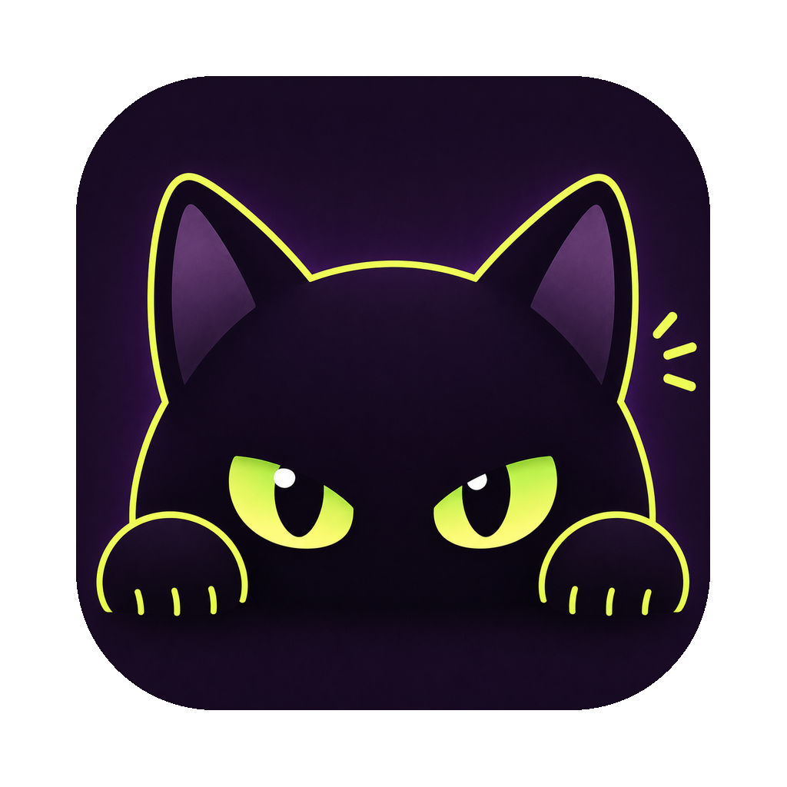
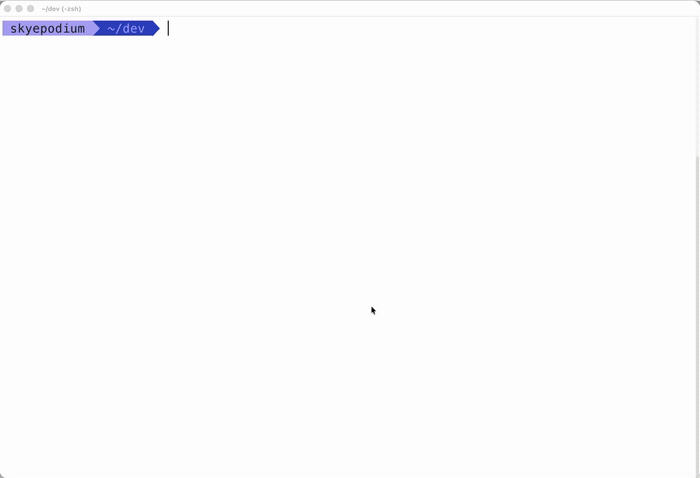

Native surface
macOS windows, tabs, splits, menus, pasteboard, and input live where they belong.
macOS terminal emulator
Kurotty blends a native AppKit feel, a Zig terminal core, and a Metal renderer into a macOS-first terminal.
Latest alpha release. Universal DMG for Intel and Apple Silicon Macs. macOS 14 or newer recommended.


Why Kurotty
Tabs, splits, menus, clipboard, notifications, and IME stay in the macOS layer. Parser, grid, scrollback, and rendering contracts move toward a tighter Zig and Metal core.
macOS windows, tabs, splits, menus, pasteboard, and input live where they belong.
Metal draws glyphs, backgrounds, cursor, underline, and strikethrough with direct control.
16-color, 256-color, truecolor, OSC title, working directory, and notification paths are already in motion.
Open source
MIT licensed. Contributions and release notes live on GitHub.
GitHub repository